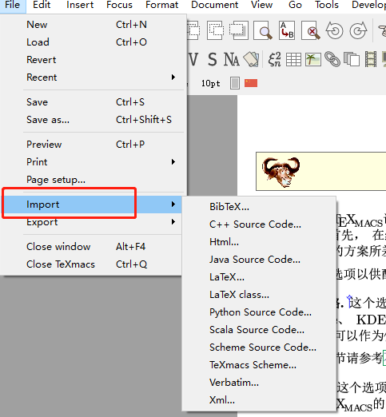

|
Personal Information
Name: Xiang Yue
Email: yx1107@foxmail.com
Github Account: Blickwinkel1107
Education
Nanjing University, Nanjing, Jiangsu, China.
Computer Science, expected graduation July 2020.
Related Experience
Three-year C++/Java and Back-end development experience. Led several group projects, like second-hand transaction platform application, independent parkour game and so on.
Developed an outdated requirement tracer as an add-on of Eclipse IDE, to help developers find which requirement document is possible to be outdated after commit code changes.
Participated in natural language processing researches and in proceedings of machine translation track of IJCAI 2020.
Interned in Intel to help maintain open-source development of the Analytics Zoo framework.
Improved TeXmacs Converters
https://www.gnu.org/software/soc-projects/ideas-2020.html#texmacs
GNU TeXmacs is a free scientific editing platform designed to create beautiful technical documents. It also provides options for users to convert documental form between TeXmacs document and other forms (eg. Html, BibTex, LaTeX). However, with the development of technique and documental forms, TeXmacs users need more conversion options for more documental forms, which requires contributors to spend much time developing new converters from scratches. To optimize this phenomenon, the proposal aims to develop a new converter for conversion of markdown documents while offering a general framework for converters development. On the one hand, markdown converter will appeal more users to use TeXmacs; on the other hand, the basic framework helps contributors create and write new converters. The proposal lists a detailed development timeline as well. This upgrade will make TeXmacs attract more contributors to join TeXmacs and develop various converters. In addition, this will also bring users more options to import/export and appeal to more users who enjoy using Html5, markdown, and other documental forms.
More Powerful Converter
Today, users on Internet have various options to choose the document to write things, like Jupyter, markdown, MS Office Word, and so on, which means the contributor of TeXmacs needs to upgrade the modules of conversion to enable TeXmacs to support more documents or file format. Not only for better user experience but also for the improvement of TeXmacs itself.
Converters now support conversion to/from Html, BibTex, XML, and LaTeX while users require conversions to more documents in the mainstream, like markdown. So, the development of a markdown converter is the first priority. Most websites use markdown to write help or comments, like Github, Reddit, Diaspora, SourceForge, and so on. This explains why once TeXmacs supports markdown conversion, more users will be attracted.
Also, contributors always meet troubles when developing new converters one and another from the very beginning. To handle this, TeXmacs needs a new, easy-to-use framework for converters. For contributors, the framework aims to provide basic functions to create new converters and development and save their time reviewing other parts of codes; for users, new converters provide them a better experience to import/export document forms. TeXmancs also needs to prepare some basic tools and frameworks for contributors to develop converters based on these.
The extension of converters and the development of the framework will further empower the current TeXmacs converter functionality and improve the quality of TeXmacs.
More Contributors to the GNU community
As a GNU project, TeXmacs need to get more opensource people to maintain. A converter framework satisfies contributors who want to add more converters in TeXmacs. They use and refer to the basic functions that the framework provides, and develop more things to empower TeXmacs conversion functionality. My development proposal is only a start, and there can be some bugs within the module. But, the new contributors attracted by these will possibly join us and help maintain the new module, even the whole TeXmacs project. Their contribution will make GNU sphere better and attract more people to join. In the end, good cycle forms, and the GNU community will be larger and stronger.
More Users of TeXmacs
Better TeXmacs means more users to use our product. Conversion to more documental forms is crucial to attracting users. For instance, if it is possible for conversion between TeXmacs and markdown, TeXmacs will receive a big circle of users since there are thousands of people knowing how to write .md. Also, most of the webpage has applied Html5, so the extension for Html5 converters will draw the attention of plentiful web developers to join TeXmacs. The above all explain why TeXmacs need more powerful converters. So the join of more contributors will bring TeXmacs more converters, which helps TeXmacs receive more users.
Front End - the Place to Show Conversion Options
The framework should make contributors think less about minor code and pay more attention to the algorithm part - the conversion part. So the converter framework needs to help contributors firstly create Front-End items automatically. To achieve this, I need to figure out where the conversion options are presented in TeXmacs, and what codes produce them.
|  |
Figure 1. Conversion Options between
different document forms
|
There are mainly two steps to locate the Front-End part.
First of all, it is important for any developer to locate where users can experience new features at the interface, which is also imperative for inverse engineering. TeXmacs shows conversion options as File->Import/Export->[File Type] in Figure 1. So the ultimate objective is to add “Markdown” or other documental form items in submenus of Import and Export options.
Second, locating the source code of front-end view. The front-end codes are at $TEXMACS_PATH/TeXmacs/progs/texmacs/menus/file-menu.scm.
Line 236~238 shows “Import” and “Export” options. And line 108~131 shows submenus, the dynamic options of conversion. We can see these words match what shows in the user-end view. The Scheme codes were written well there, and it is possible for me to figure out the important class within the critical parts.
After getting familiar with them, I can follow the codes written before and link up the front-end modification with framework codes in a short period of time. Still, compilation and testing work is in need and may cost a lot of time.
Back-End - How Contributors Write New Converters
To further help contributors focus on algorithm part of converters, I need to learn the procedures to write a converter in the Back-End part and try to extend converters. Since markdown and Html5 prevail in communities, I choose to write these two converters as a trial. Also, I do this for the improvement of current converters.
Fortunately, to write the core parts of the converter is just the same as writing a function - declare and implement. TeXmacs offers friendly ways to declare converters and data formats (http://www.texmacs.org/tmweb/manual/webman-convert.en.html) with high abstraction as follows:
(define-format format (:name format-name) options) (converter from-format-name to-format-name options)
Moreover, we can see example in $/TEXMACS_PATH/progs/convert/init-html.scm. This directory shows how converter converts TeXmacs doc to Html. We can locate declaration of “Html” format (line 36) and converter from “texmacs-stree” to several html-related data formats (line 48~68).
So, in the same way, I can declare a new converter in a new directory with init-xxx.scm. The more important matter is to implement the conversion.
Markdown converter
The first task of the proposal is to import a fresh new markdown converter to TeXmacs. Mere transplanting converter module is not that hard though, more important thing is to verify whether or not the converter can process conversion perfectly. So, my core works are as follows:
Module Transplant
Contributors of TeXmacs have published a markdown converter. (https://bitbucket.org/mdbenito/tm2md/src/master/). So, I just need to transplant the module into the TeXmacs code instead of developing markdown converters from scratches.
Transplanting seems easy enough though, I shall not only transplant source code of the markdown converter but also display markdown converter options in the user interface. Besides coding, basic testing and verification are also in need.
In addition, thanks to the existence of the markdown converter, I can also focus on developing general converter frameworks to help more contributors transplant their converters into TeXmacs, just like what I do.
Conversion Bug Fixing
Another problem is how to verify the functionality of the markdown converter. Transplanting not means everything is fine, on the contrary, it will possibly bring more bugs and errors to the project. Also, users want a perfect converter, not a semi-manufacture. The best way to find bugs is to use a TeXmacs document as a testing sample and make it be converted to markdown format as perfect as possible. Bugs like some text cannot be converted successfully can be found, and then it is my task to fix this.
The ultimate goal is to make the converter supporting “perfect conversion” for “markdown-to-TeXmacs” and “TeXmacs-to-markdown”.
Html5 converter
Since TeXmacs contains a converter for Html, contributors can follow the development of the Html converter and figure out differences between Html and Html5. Clarifying what they need to develop is important because some features that TeXmacs does not support or does not need (for instance, Html5 includes more features regarding multi-media though, TeXmacs document does not need those features).
Some details of Html5 v.s. Html features are as follows:
Html5 has lots of new semantic tags: <article> <header> <nav> …
Html's tags are most of the low semantics.
Html5 abandons some of Html tags.
Html5 differs in doctype declaration from Html
Html5 uses <canvas> to process painting.
……
Contributors can implement the feature important to TeXmacs documents, mimicking the development of the Html converter.
Other converters
As for other converters in general, it is up to contributors to implement. The development of the converter framework should give them a good environment to write a core conversion algorithm. Generally, I think there are two ways to implement the conversion.
First, direct implementation. In this way, contributors need to find the public part of TeXmacs and Office formats and exclude other meaningless parts. Then, they should write a conversion process between two encoding formats. Since the TeXmacs document is content-limited and simple, the conversion is possible to make.
Second, indirect implementation. This means contributors need open-source solutions - to include a third-party module in TeXmacs's code. And the module needs to process the conversion itself. For example, a “TeXmacs to Office doc” process can be performed by “pandoc” as “TeXmacs to markdown, and markdown to Office doc”. This way is more possible but needs to be careful about the interest of developers.
Framework Development
After finish getting familiar with Front-End and Back-End codes about converters while finish developing markdown converter, the second task is to develop the converter framework. The above analysis show several features the framework should support as follows:
Front-End: add conversion options in TeXmacs automatically after contributors declare new converters. This part should be an abstraction to contributors unless they want to modify this.
Back-End: give contributors some fixed declarations and methods for writing converters, and let them write the core code of algorithm without worrying about other things. This part should also provide documents and standards to guide contributors to develop their converters legally.
Assume contributors finished converter development already, they need to test new features to evaluate. The feedback of users is important to give directions for further development. TeXmacs project has some Google test samples and testing code (https://github.com/texmacs/texmacs/tree/master/tests). I can add merge these codes to the framework as a testing part.
Following the above steps can still meet with new ideas and annoying bugs, so I need to develop functions in iterations.
Document Writing
After framework development is completed, I need to update the official document (webman-convert.en.html) to show that TeXmacs includes a converter framework. Additionally, a summary of my development is nice to have. My experience of writing papers and documents can help me in this part.
1.Jun. ~ 30.Jun.
Decouple the core codes of Front-End and Back-End parts, try some modification, and get familiar with compiling and testing procedures.
Get familiar with the markdown converter's source code.
Transplant markdown converter into TeXmacs. Add new converter options to the user interface.
Basic test and verification.
If there is any modification in the master branch, discuss it with mentors first.
Optional: develop a standard converter-dev framework for contributors to for the better experience of converter developing.
1.Jul. ~ 5.Aug.
Develop a standard converter-dev framework for contributors to for the better experience of converter developing.
Find a proper TeXmacs document for conversion tests. Conduct conversion tests and compare results.Fix “TeXmacs-to-markdown” bugs. Find bugs and try to fix them, i.e. to figure out why some text cannot be converted.
Optional: write a “markdown-to-TeXmacs” converter.
Try the best to realize a perfect conversion and form a conversion cycle.
6.Aug. ~ 31.Aug.
Write help documents of markdown converter.
Write standards documents of the converter framework.
Write a development summary.
Fix minor bugs and check code style. Conduct the final verification.
Make sure everything in GNU standards.
In the upcoming period of time and summer, I will first go to Jiangsu, China, to get my graduation certificate, and go back to Shandong, China, my hometown. During this time, I can absorb in development without dealing with other things. Also, I will choose to use Zoom with mentors to communicate face-to-face. Using the dev-mail list, email or Gitter is also helpful. We may live in a different time zone, so make an appointment before start communication is necessary.
As a senior student in the Computer Science department, I have been working with my friend to develop lots of team projects. They are great though, I found that I have been merely making toy programs in university and only have limited experience of developing real industrial projects. So a real, full-stack development experience is important to me, not to mention that it is what I need to become a high-caliber developer and software specialist in the world.
GSoC provides me a good chance to work with great mentors to maintain open-source projects. I choose to improve TeXmacs because it is close to my academic life and the product can improve my writing experience. Also, I have some experience developing user-oriented products. I think my code-decoupling ability, solid coding ability, paper writing skill, and persistence will help TeXmacs become better.
I hope to join the GNU community and try the best of mine to make TeXmacs greater!